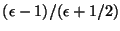
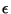
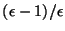

COSMO is the continuum solvation `COnductor-like Screening MOdel' of A. Klamt and G. Schüürmann to describe dielectric screening effects in solvents.
The NWChem COSMO module implements algorithm for calculation of the energy for the following methods:
Correlation energy of solvent molecules may also be evaluated at
In the current implementation the code calculates the gas-phase energy of the system followed by the solution-phase energy, and returns the electrostatic contribution to the solvation free energy. At the present gradients are calculated by finite difference of the energy. Known problems include that the code does not work with spherical basis functions. The code does not calculate the non-electrostatic contributions to the free energy, except for the cavitation/dispersion contribution to the solvation free energy, which is computed and printed. It should be noted that one must in general take into account the standard state correction besides the electrostatic and cavitation/dispersion contribution to the solvation free energy, when a comparison to experimental data is made.
Invoking the COSMO solvation model is done by specifying the input COSMO input block with the input options as:
cosmo
[off]
[dielec <real dielec default 78.4>]
[radius <real atom1>
<real atom2>
. . .
<real atomN>]
[rsolv <real rsolv default 0.00>]
[iscren <integer iscren default 0>]
[minbem <integer minbem default 2>]
[maxbem <integer maxbem default 3>]
[ificos <integer ificos default 0>]
[lineq <integer lineq default 1>]
end
followed by the task directive specifying the wavefunction and
type of calculation, e.g., task scf energy, task mp2 energy,
task dft optimize, etc.
off can be used to turn off COSMO in a compound (multiple task)
run. By default, once the COSMO solvation model has been defined it will
be used in subsequent calculations. Add the keyword off if COSMO
is not needed in subsequent calculations.
Dielec is the value of the dielectric constant of the medium,
with a default value of 78.4 (the dielectric constant for water).
Radius is an array that specifies the radius of the spheres
associated with each atom and that make up the molecule-shaped cavity.
Default values are Van der Waals radii. Values are in units of angstroms.
The codes uses the following Van der Waals radii by default:
data vdwr(103) /
1 0.80,0.49,0.00,0.00,0.00,1.65,1.55,1.50,1.50,0.00,
2 2.30,1.70,2.05,2.10,1.85,1.80,1.80,0.00,2.80,2.75,
3 0.00,0.00,1.20,0.00,0.00,0.00,2.70,0.00,0.00,0.00,
4 0.00,0.00,0.00,1.90,1.90,0.00,0.00,0.00,0.00,1.55,
5 0.00,1.64,0.00,0.00,0.00,0.00,0.00,0.00,0.00,0.00,
6 0.00,0.00,0.00,0.00,0.00,0.00,0.00,0.00,0.00,0.00,
7 0.00,0.00,0.00,0.00,0.00,0.00,0.00,0.00,0.00,0.00,
8 0.00,0.00,0.00,0.00,0.00,0.00,0.00,0.00,0.00,0.00,
9 0.00,0.00,0.00,0.00,0.00,0.00,0.00,0.00,0.00,0.00,
1 0.00,0.00,0.00,0.00,0.00,0.00,0.00,0.00,0.00,1.65,
2 0.00,0.00,0.00/
with 0.0 values replaced by 1.80. Other radii can be used as well.
See for examples:
Rsolv is a parameter used to define the solvent accessible
surface. See the original reference of Klamt and Schuurmann for a
description. The default value is 0.00 (in angstroms).
Iscren is a flag to define the dielectric charge scaling option.
``iscren 1'' implies the original scaling from Klamt and Schüürmann,
mainly ``
'', where  is the dielectric constant.
``iscren 0'' implies the modified scaling suggested by Stefanovich and
Truong, mainly ``
''. Default is to use the modified scaling.
For high dielectric the difference between the scaling is not
significant.
The next three parameters define the tesselation of the unit sphere.
The approach follows the original proposal by Klamt and Schüürmann.
A very fine tesselation is generated from maxbem refining
passes starting from either an octahedron or an icosahedron. The
boundary elements created with the fine tesselation are condensed
down to a coarser tesselation based on minbem. The induced
point charges from the polarization of the medium are assigned to
the centers of the coarser tesselation. Default values are
``minbem 2'' and ``maxbem 3''. The flag ificos serves to
select the original tesselation, ``ificos 0'' for an octahedron
(default) and ``ificos 1'' for an icoshedron. Starting from an icosahedron
yields a somewhat finer tesselation that converges somewhat faster.
Solvation energies are not really sensitive to this choice for
sufficiently fine tesselations.
The lineq parameter serves to select the numerical algorithm to solve
the linear equations yielding the effective charges that represent
the polarization of the medium. ``lineq 0'' selects an iterative method
(default), ``lineq 1'' selects a dense matrix linear equation solver.
For large molecules where the number of effective charges is large,
the codes selects the iterative method.
The following example is for a water molecule in `water', using the HF/6-31G** level of theory:
start
echo
title "h2o"
geometry
o .0000000000 .0000000000 -.0486020332
h .7545655371 .0000000000 .5243010666
h -.7545655371 .0000000000 .5243010666
end
basis segment cartesian
o library 6-31g**
h library 6-31g**
end
cosmo
dielec 78.0
radius 1.40
1.16
1.16
rsolv 0.50
lineq 0
end
task scf energy